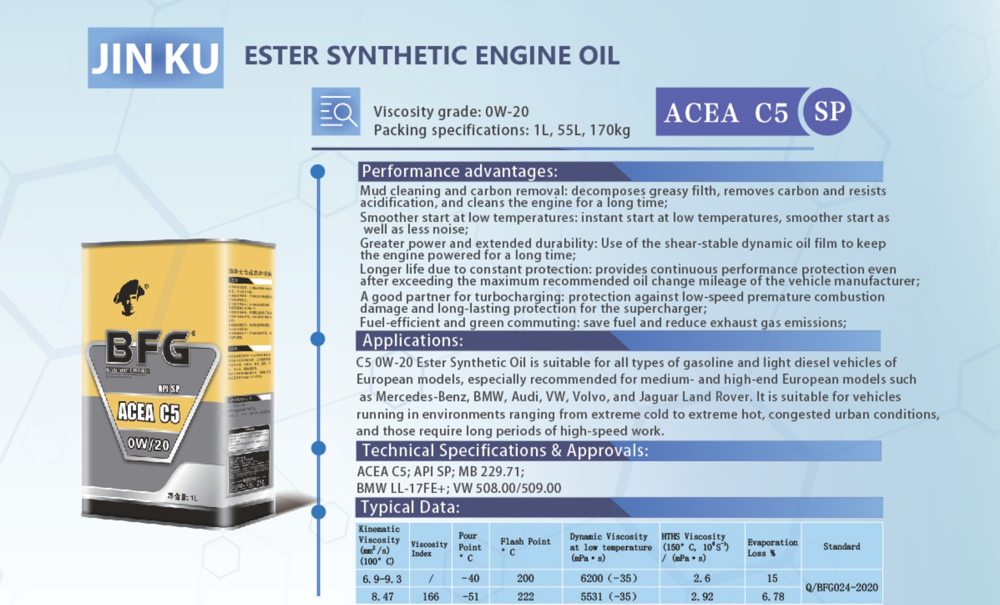

分类清晰
按照发动机油、变速箱油、柴油机油、液压油等用途组织产品，便于快速筛选。
BFG 润滑油产品目录
汇集发动机油、变速箱油、柴油机油、齿轮油、液压油、防冻液等产品，并提供详细产品图页查看。

关于 BEIERSDORF
按照发动机油、变速箱油、柴油机油、液压油等用途组织产品，便于快速筛选。
每个产品保留手册原始详细页面，规格、应用范围和典型数据可以直接查看。
页面导航、分类、产品摘要支持中文、英文和俄文切换。
产品中心
详细性能优势、适用范围和典型数据请查看左侧产品图页。
质量体系
产品图页包含 API、ACEA、ILSAC、OEM 规格以及典型检测数据，便于客户根据应用场景对比选择。
联系
网站：www.beiersdorfchina.com · 电话：4000-987-256